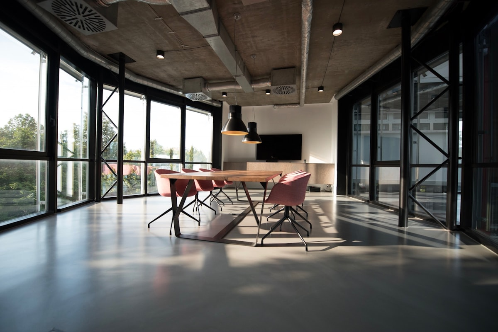

Rajaamme työn
Selvitämme kohteen, pinnat, aikataulun ja valmiin työn tavoitetason.

Hoidamme vaativammatkin siivoustyöt vankalla ammattitaidolla ja oikeilla välineillä. Olipa kyseessä sitten rakennustyömaan loppusiivous, perusteellinen muuttosiivous tai lattioiden vahoitustyö, meiltä löytyy osaaminen.
Erikoissiivous alkaa aina työn, pintojen ja tavoitteen kartoituksella. Näin valitsemme oikeat menetelmät, välineet ja työajan.
Selvitämme kohteen, pinnat, aikataulun ja valmiin työn tavoitetason.
Työtapa ja välineet valitaan pinnan ja lian mukaan ennen työn aloittamista.

Ammattilaiset tekevät sovitun työn huolellisesti ja kohteen muut työt huomioiden.

Käymme lopputuloksen läpi ja varmistamme, että sovittu tavoite täyttyy.

Vaativa siivous ei ole yksi valmis paketti. Työ mitoitetaan kohteen, materiaalien ja tavoitellun lopputuloksen mukaan.
Kerro kohteesta, pinnoista ja aikataulusta. Selvitämme oikean työtavan ja työmäärän.